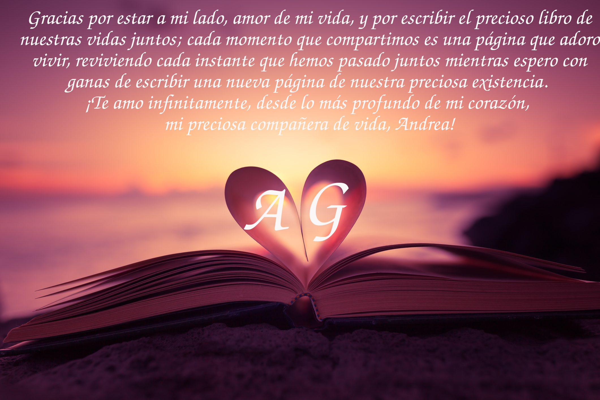

Llegamos amor de mi vida a – 1 mes de nuestro aniversario, nuestro preciado 23 de octubre! Estoy super feliz e emocionado a que llegue nuestro dia, para celebrar nuestro quinto aniversario juntos e rientra espieremo, hoy a los 4 años y 11 meses juntos, quiero decirte gracias, amor de mi vida, por existir y por elegirme, por estar aquí a mi lado cada día, y por darme lo más hermoso de toda mi vida: la felicidad de tenerte aquí y compartir cada instante juntos, llenándolo con nuestro preciado amor, que siento crecer día tras día y que fortalece nuestro vínculo con un amor puro e intenso que amo proteger y guardar en lo profundo de mi corazón con todo mi corazón como una caja fuerte. Porque cada momento eres la parte más preciada de mí, la que me completa, y amo vivir cada instante de mi vida. Quiero agradecerte por ser única tal como eres, con tu dulzura y tu forma de ser que me hacen sentir bien, gracias por cada dulce palabra que hace que mi corazón lata más rápido y con tu sonrisa que con cada mirada que hacemos me hace sentir completa mientras me abrazas fuerte en tus brazos y me haces saborear tus besos que como oxígeno me hacen vivir mientras siento que nuestras almas se unen en lo profundo de nuestros corazones para convertirnos en una sola persona juntos. Admiro cada momento de tu preciosa fuerza que llevas dentro y como cada momento nunca te rindes y sabes cómo completar cada desafío que la vida te lanza. Me encanta estar aquí cada momento, amor de mi vida, para animarte y ayudarte cada momento a llegar juntos al final, como en este último período que incluso si lo estamos atravesando con el problema del trismo, estoy aquí contigo, amor de mi vida, a tu lado para darte todo mi amor. Quiero estar aquí cada momento de mi vida y más allá, en los malos y en los buenos, para protegerte de todo mal y verte bien y feliz, porque eso es lo más importante para mí cada día. Quiero decirte, mi preciosa Andrea, que contigo me siento cada día más completa y siempre estoy lista para vivir cada día juntas al máximo de nuestras emociones. Me encanta que cada día sea único y diferente, para poder saborearlo hasta el final, desde despertar por la mañana y encontrarte aquí deseándome buenos días, hasta encontrarme en tus brazos por la noche, y mis ojos como los de una niña al oír tu dulce voz, cerrándose suavemente mientras te abrazo fuerte y siento en mi corazón una explosión de emociones que no puedo describir. Gracias por estar aquí en cada momento, desde los momentos difíciles que hemos atravesado, de los cuales hemos permanecido unidos, de los cuales hemos aprendido y de los cuales hemos resurgido más fuertes que antes, haciendo crecer nuestra unión, hasta los hermosos momentos de celebración que me encanta vivir juntos y luego recordarlos, guardándolos en la caja de nuestros preciosos recuerdos. Gracias por ser la estrella que guía el camino de mi vida y por ser mi refugio seguro, borrando toda duda o miedo en mí, dándome el deseo de vivir la vida juntos, completando cada precioso momento. Cada día, me inspiro en ti, el amor de mi vida, en todo lo que haces, porque me encanta cómo logras llevarlo todo hasta el final y siempre añades esa magia extra que hace que todo sea más especial y extraordinario, e incluso las cosas más pequeñas se vuelven extraordinarias. Feliz 4 años y 11 meses juntos, amor de mi vida, que Dios te bendiga a ti y a nuestra preciosa relación que crece y se fortalece cada día. Te amo inmensamente desde lo más profundo de mi corazón, que con cada latido, como una melodía, clama alegremente tu nombre mientras acoge tu preciosa alma para protegerla de todo mal durante toda mi vida y más allá. Te amo infinitamente desde lo más hondo de mi mente, donde cada día y cada noche eres el sueño más extraordinario y único que quiero vivir durante toda mi vida y más allá. Te amo sin límites, tú que eres más importante que el oxígeno que respiro, tú que eres la estrella que ilumina mi vida y la hace hermosa y única, tú que eres mi precioso hogar donde quiero vivir profundamente en tus preciosos brazos mientras te abrazo fuerte a mí escuchando el latido de tu corazón que como una melodía me hace relajarme y me hace sentir completo lejos de todo mal, tú que eres mi preciosa y extraordinaria mogliettina a quien quiero amar por toda mi vida y más allá, tú que eres mi precioso pingüino que cada día estoy orgulloso de tener a mi lado y que hace que mi corazón lata más rápido de felicidad y amor, tú que eres mi preciosa compañera de vida con quien quiero vivir cada momento de nuestro precioso viaje unidos en una sola persona capaz de enfrentar y superar cada obstáculo como un tren en movimiento que nunca se detiene y viviendo cada momento extraordinario juntos, ¡tú que eres y siempre serás mi todo! Andrea + Giorgio + gioan + bananon + luna = ¡La familia más extraordinaria y única en todo el universo juntos hoy, para siempre y más allá!